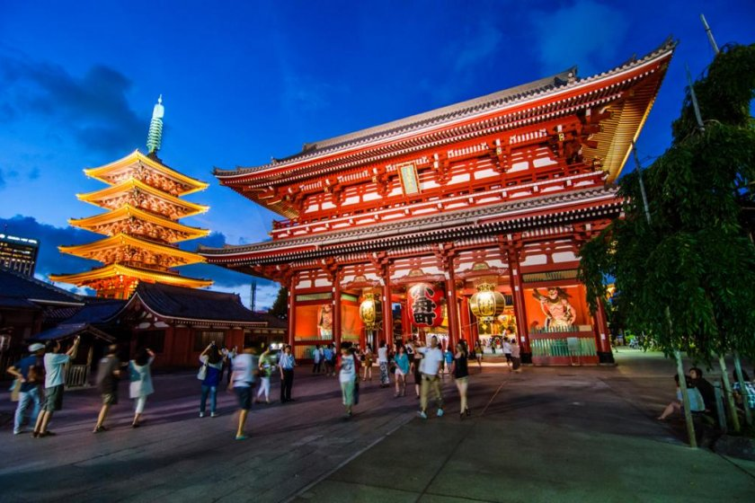
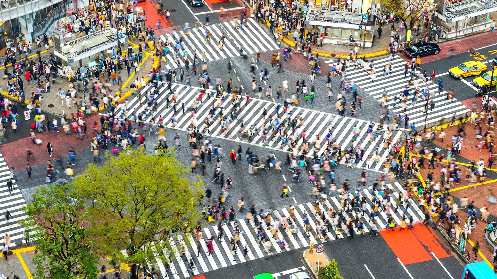
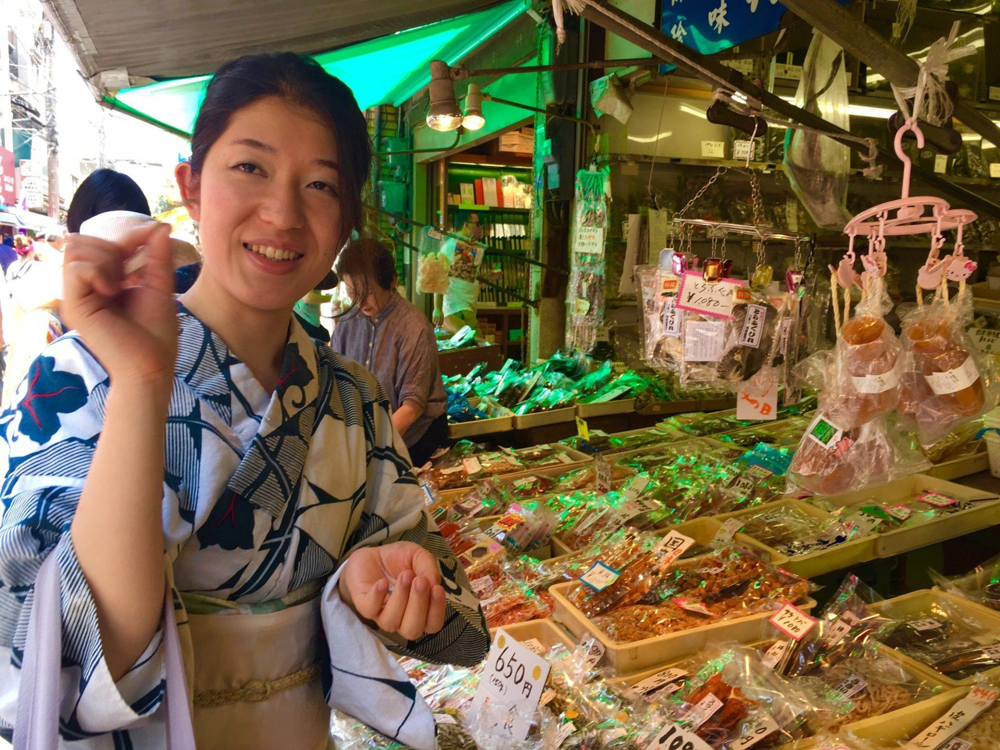
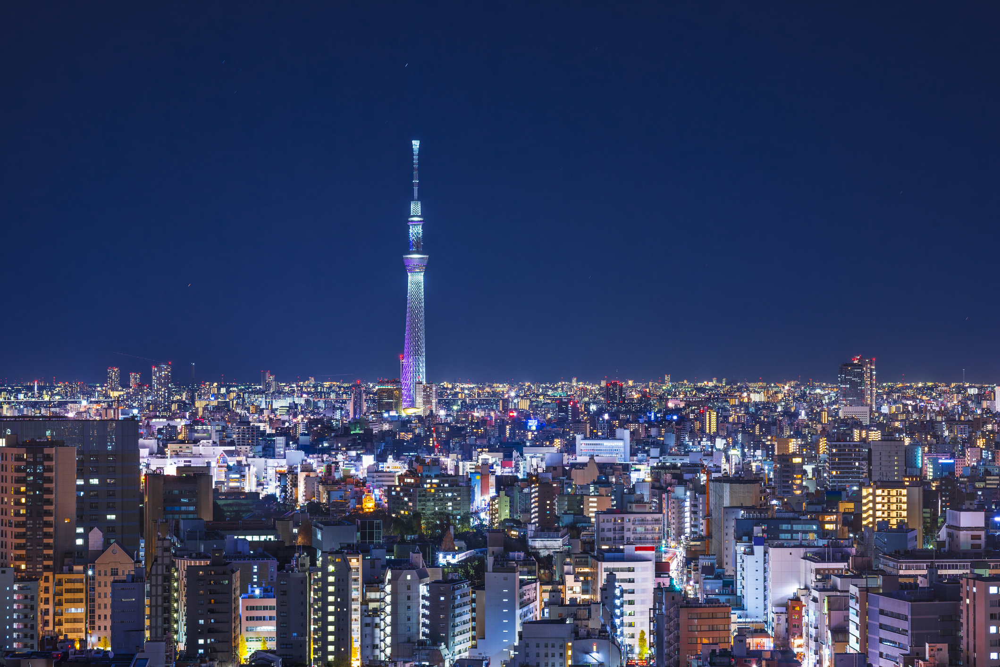
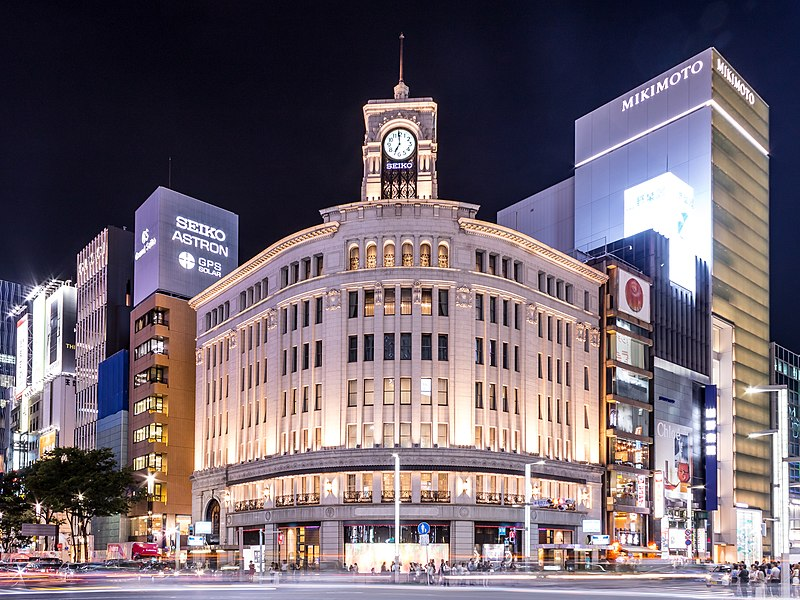
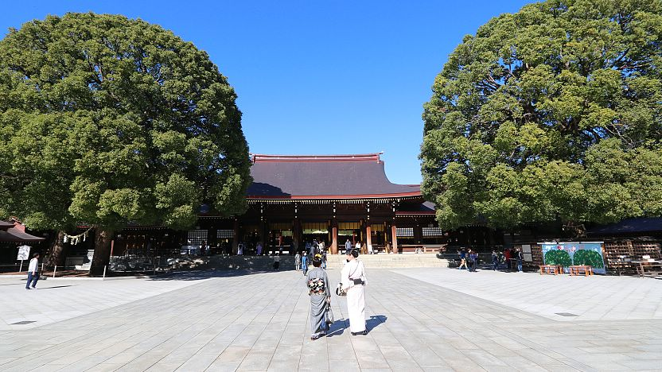
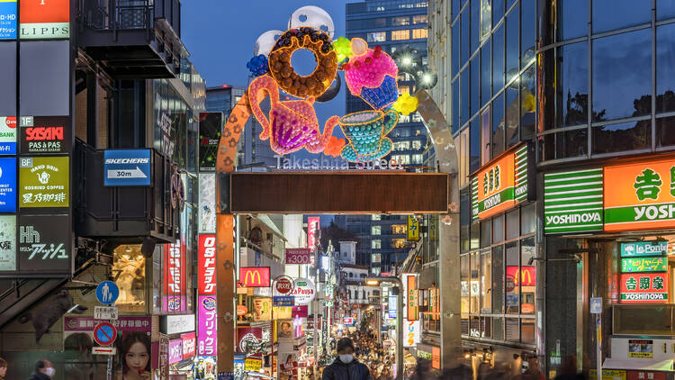
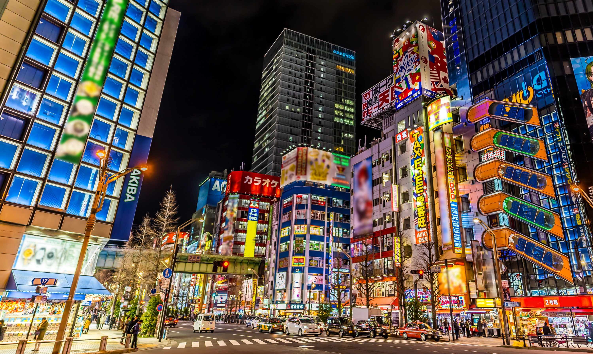
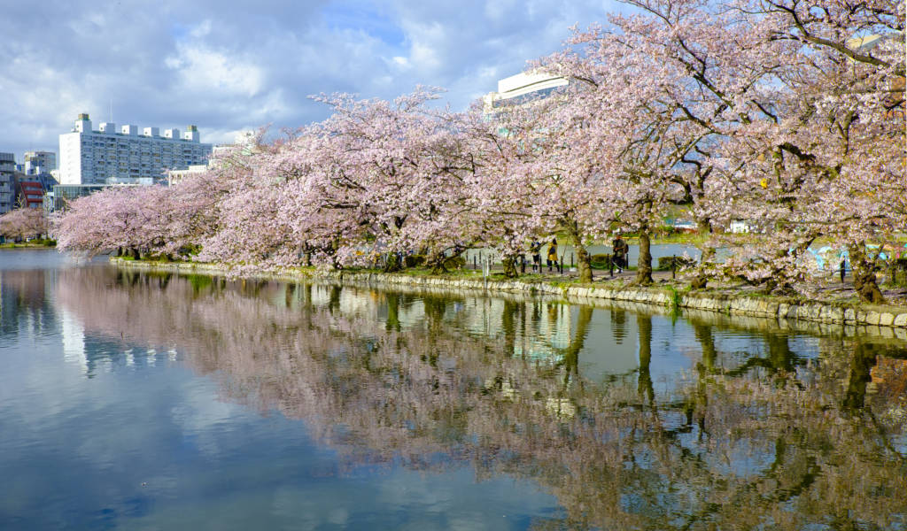

Exploring Tokyo: Top 10 Must-Visit Places
Tokyo, the bustling capital of Japan, offers a mix of traditional and modern attractions. From ancient temples to skyscrapers, here are the top 10 must-visit places in Tokyo:
-
Senso-ji Temple: Located in Asakusa, Senso-ji is Tokyo's oldest temple and a symbol of the city's rich history.

-
Shibuya Crossing: Experience the energy of Tokyo at one of the world's busiest pedestrian crossings in Shibuya.

-
Tsukiji Fish Market: Visit the largest wholesale fish market in the world and enjoy fresh seafood at Tsukiji.

-
Tokyo Skytree: Take in panoramic views of the city from the observation decks of Tokyo Skytree, the tallest tower in Japan.

-
Ginza District: Shop at luxury boutiques and department stores in Ginza, known as Tokyo's upscale shopping district.

-
Meiji Shrine: Escape the hustle and bustle of the city and explore the tranquil grounds of Meiji Shrine in Shibuya.

-
Harajuku: Discover Tokyo's youth culture and fashion trends in Harajuku, famous for its street fashion and quirky shops.

-
Akihabara: Immerse yourself in otaku culture and explore the electronic shops and manga stores of Akihabara.

-
Ueno Park: Relax in Ueno Park, home to museums, temples, and a zoo, offering something for everyone.

These are just a few highlights of what Tokyo has to offer. Whether you're interested in history, shopping, or cuisine, Tokyo has something for every traveler.
Back to Blog